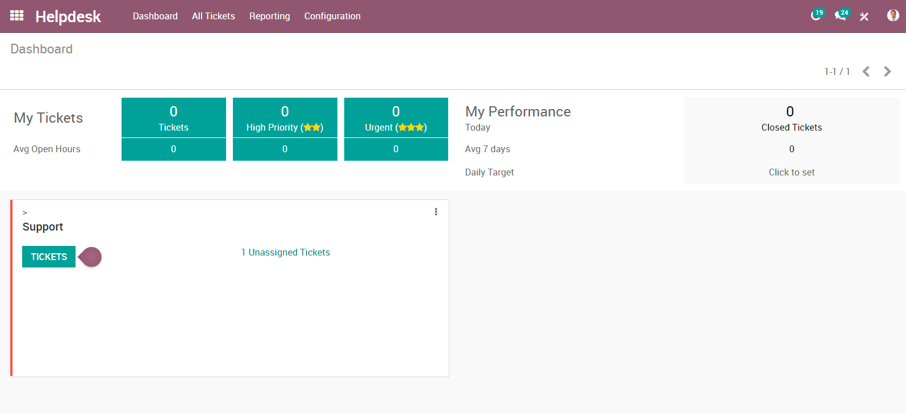
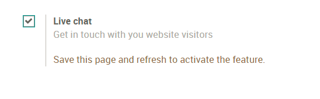
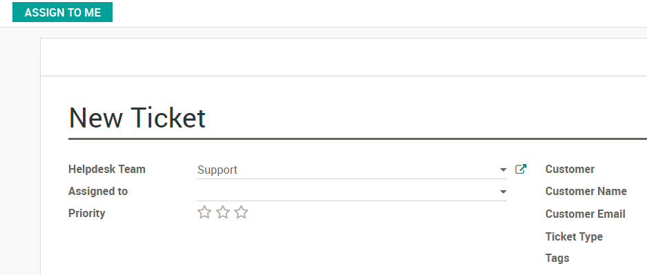
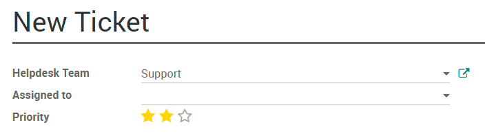
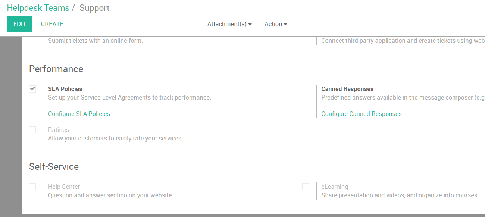
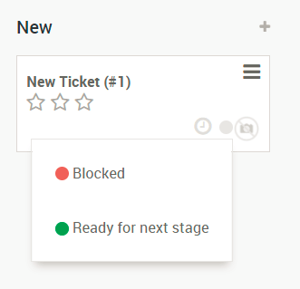

Overview
Getting started with Odoo Helpdesk
Installing Odoo Helpdesk:
Open the Apps module, search for "Helpdesk", and click install

Set up Helpdesk teams
By default, Odoo Helpdesk comes with a team installed called "Support"
To modify this team, or create additional teams, select "Configuration" in the purple bar and select "Settings"

Here you can create new teams, decide what team members to add to this team, how your customers can submit tickets and set up SLA policies and ratings. For the assignation method you can have tickets assigned randomly, balanced, or manually.
How to set up different stages for each team
First you will need to activate the developer mode. To do this go to your settings module, and select the link for "Activate the developer mode" on the lower right-hand side.

Now, when you return to your Helpdesk module and select "Configuration" in the purple bar you will find additional options, like "Stages". Here you can create new stages and assign those stages to 1 or multiple teams allowing for customizable stages for each team!
Start receiving tickets
How can my customers submit tickets?
Select "Configuration" in the purple bar and select "Settings", select your Helpdesk team. Under "Channels you will find 4 options:

Email Alias allows for customers to email the alias you choose to create a ticket. The subject line of the email with become the Subject on the ticket.
Website Form allows your customer to go to yourwebsite.com/helpdesk/support-1/submit and submit a ticket via a website form - much like odoo.com/help!
Live Chat allows your customers to submit a ticket via Live Chat on your website. Your customer will begin the live chat and your Live Chat Operator can create the ticket by using the command /helpdesk Subject of Ticket.

The final option to submit tickets is thru an API connection. View the documentation *here*.
Tickets have been created, now what?
Now your employees can start working on them! If you have selecting a manual assignation method then your employees will need to assign themselves to tickets using the "Assign To Me" button on the top left of a ticket or by adding themselves to the "Assigned to" field.
If you have selected "Random" or "Balanced" assignation method, your tickets will be assigned to a member of that Helpdesk team.
From there they will begin working on resolving the tickets! When they are completed, they will move the ticket to the solved stage.
How do I mark this ticket as urgent?
On your tickets you will see stars. You can determine how urgent a ticket is but selecting one or more stars on the ticket. You can do this in the Kanban view or on the ticket form.
To set up a Service Level Agreement Policy for your employees, first activate the setting under "Settings"
From here, select "Configure SLA Policies" and click "Create".
You will fill in information like the Helpdesk team, what the minimum priority is on the ticket (the stars) and the targets for the ticket.

What if a ticket is blocked or is ready to be worked on?
If a ticket cannot be resolved or is blocked, you can adjust the "Kanban State" on the ticket. You have 3 options:
- Grey - Normal State
- Red - Blocked
- Green - Ready for next stage
Like the urgency stars you can adjust the state in the Kanban or on the Ticket form.
How can my employees log time against a ticket?
First, head over to "Settings" and select the option for "Timesheet on Ticket". You will see a field appear where you can select the project the timesheets will log against.

Now that you have selected a project, you can save. If you move back to your tickets, you will see a new tab called "Timesheets"

Here you employees can add a line to add work they have done for this ticket.
How to allow your customers to rate the service they received
First, you will need to activate the ratings setting under "Settings"

Now, when a ticket is moved to its solved or completed stage, it will send an email to the customer asking how their service went.